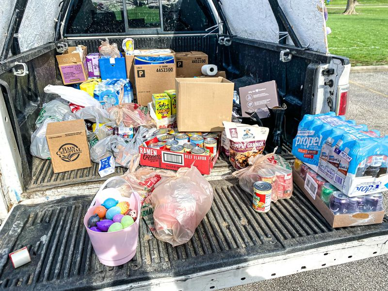

Mobile uploads
Look at all this amazing stuff we got at our first annual Good Friday food drive for Akron homeless people.
You all are like chicken noodle soup for my soul. You are so kind and so generous.
A couple who were very early residents of our first tent village walked over to the west side from the east side to hang out with me. They are currently homeless. They are tired of living in abandoned houses. They wanted to get a 3 person tent. A mom and son heard this and drove back to Magadore to get them a tent they had at their house. Another couple donates brand new combat boots that fit this man.
I met a mom and son whose daughter stayed with us at our tent village. She’s now a general manager at a dollar store.
It was all so beautiful.
Acme said we could do our event at their place. But then they told us to leave. We don’t need to be angry at them. I don’t think they realized what they were getting into. I think all your generosity was too shocking for them.
I think next Good Friday I’ll invite some other homeless groups to come. That way you can donate more than just food. So mark your calendars for that.
Easter is the coolest of all the holidays for Christians. I mean Christmas is still the funnest. But Easter is the coolest. It’s all bunnies and eggs and people being risen from the dead. It’s the deepest of all forms of hope. No matter how bad things are there’s always a new day tomorrow. ALWAYS.
Happy Easter everyone!